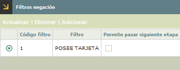
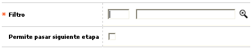
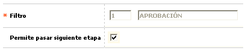

Parámetros solicitudes por producto |
Filtros negación: Conjunto de campos que permiten determinar los filtros de negación que efectivamente aplican para cada etapa y a pesar de ser negadas o detectadas por el filtro puede permitirse el paso a la siguiente etapa.
El formulario contiene las opciones Actualizar, Eliminar, y Adicionar. Adicionalmente, tiene un botón en la parte superior para volver al formulario anterior: Etapas.

Adicionar: Si el usuario invoca la opción Adicionar se despliega un formulario con los siguientes campos:

Filtro |
Campo que posee lista de valores poblada en el tab del mismo nombre de ésta opción del menú, de la que puede seleccionarse para la mayoría de las etapas los que efectivamente van a aplicarse. |
Permite pasar siguiente etapa |
En este campo se determina si a pesar de que una solicitud sea negada o detectada por cualquiera de los filtros, dicha solicitud pase a la siguiente etapa o no. |
Actualizar: Si el usuario invoca la opción Actualizar se despliega un nuevo formulario en el cual el único campo modificable es: Permite pasar siguiente etapa.

Solicitudes | Cupos extendidos | Relaciones laborales | Cupos mín y máx por rango |Copiar parámetros